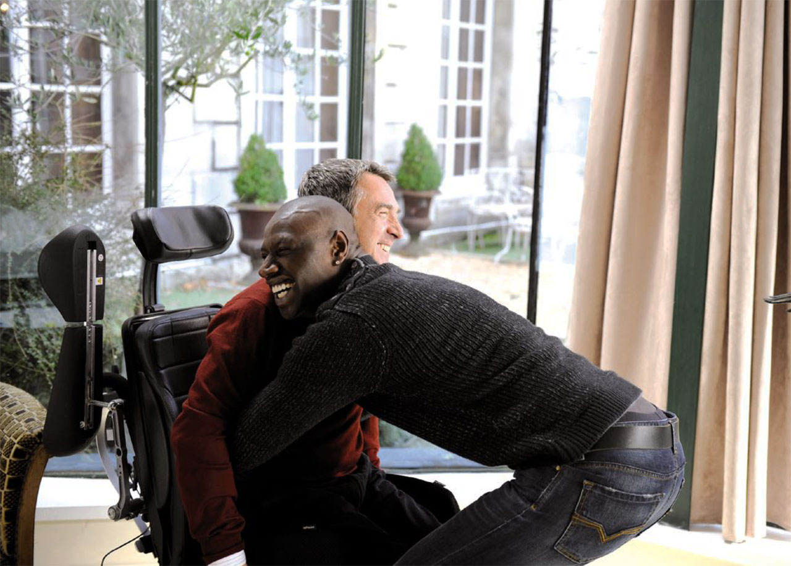
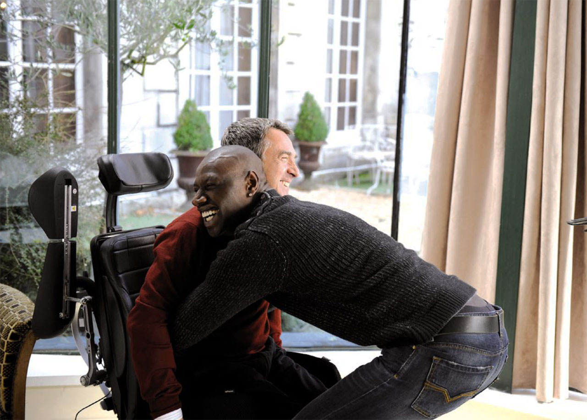

Intouchables
Norsk tittel: De urørlige
- Genre
- Drama, biografi, komedie
- Lengde
- 112 minutter
- Skuespillere
- Alba Gaïa Kraghede Bellugi, Anne Le Ny, Audrey Fleurot, Clotilde Mollet, Francois Cluzet, Omar Sy
- Kort sammendrag
- De Urørlige er basert på en utrolig, men sann historie. Filmen, som er sett av 20 millioner franskmenn, har blitt et internasjonalt fenomen og er den mest inntjenende ikke-engelskspråklige filmen i historien.
Andre har gitt denne filmen: 5.0 stjerner
- Handling
-
Den sanne historien om to menn som aldri skulle ha møtt hverandre - De Urørlige er en oppløftende komedie om vennskap, tillit og menneskelige muligheter. Mangemillionæren Philippe er lam fra nakken og ned etter en paragliderulykke, og må leve resten av livet i rullestol.
Han bor i luksuriøse omgivelser i Paris og skal ansette en ny pleieassistent. Den eneste av søkerne som skiller seg ut er Driss - den unge mannen som har levert søknaden kun fordi han må vise at han er aktiv arbeidssøker for å beholde trygdepengene. Snart begynner et usannsynlig kameratskap forankret i ærlighet og humor mellom to individer som på overflaten ikke ville hatt noe til felles.
- Produsert
- FRA 2011
- Regissører
- Olivier Nakache / Eric Toledano
Media


 
